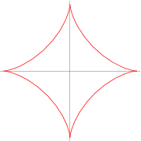
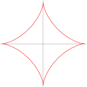

The graph of the equation \(x^{2/3} + y^{2/3} = a^{2/3}, a \geq 0\) is called an astroid. Find the arc length of this graph.
(hint: exploit symmetry)

Newton's Law of Gravitation states that two bodies having masses \(m_1\) and \(m_2\) attract each other with a force $$ F = G\frac{m_1m_2}{r^2}$$ where \(G\) is the gravitational constant and \(r\) is the distance between the two bodies. Assume that the mass of the earth is \(5.97 \times 10^{24}\) kg and is concentrated at the center of the earth, the radius of the earth is \(6.37 \times 10^6\) m, and \(G = 6.67 \times 10^{-11}\) Nm\(^2\)/kg\(^2\).
The graph of the equation \(x^{2/3} + y^{2/3} = a^{2/3}, a \geq 0\) is called an astroid. Find the arc length of this graph.
(hint: exploit symmetry)

A container having the shape of a solid of revolution obtained by revolving the graph of \(y= kx^4, k>0,\) about the \(y\)-axis is made with a transparent material. A small hole is drilled in the bottom to allow water to flow out.
Consider the region bounded by \(x=0,y=0,x=2,\) and \(y = x^2 + 2\). What is the volume created by rotating this region about the
Consider a tank in the shape of an inverted cone with radius 5m and height 10m filled with water. What is the work required to pump all the water in this tank out a spout 2 m above the top of the tank?
Let \(F\) be the fluid force on a side fo a semicircular plate of radius \(r\) meters submerged in Water so the diameter is level with the water surface. Calculate \(F\) as a function of \(r\).
Consider emptying a trough full of water. the trough is 8 ft long and the ends are in the shape of a semicircle with radius 2 ft. We'll empty the tank by pumping the water out of a pipe extending 1 foot above the top of the trough.
Some tasks to think about:
Consider stamping a flat metal sheet into a corrugted pattern 28 inches long with shape given by \(y = \sin(\pi x/7) \). Set up an integral for the length of the original flat sheet.